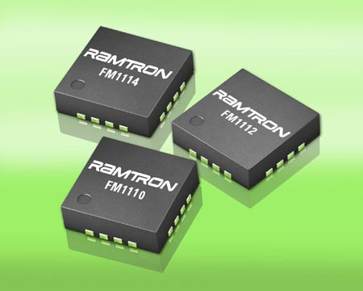

2.6.1. Общие сведения о триггерах
Триггер — это электронное устройство последовательного типа с двумя устойчивыми состояниями равновесия, предназначенное для записи и хранения информации. Под действием входных сигналов триггер может переключаться из одного устойчивого состояния в другое. При этом напряжение на его выходе скачкообразно изменяется.
Отличительной особенностью триггера как функционального устройства является свойство запоминания двоичной информации. Под памятью триггера подразумевают способность оставаться в одном из двух состояний и после прекращения действия переключающего сигнала. Приняв одно из состояний за «1», а другое за «0», можно считать, что триггер хранит (помнит) один разряд числа, записанного в двоичном коде.
Триггеры и регистры являются простейшими представителями цифровых микросхем, имеющих внутреннюю память. Если выходные сигналы логических элементов и комбинационных микросхем однозначно определяются их текущими входными сигналами, то выходные сигналы микросхем с внутренней памятью зависят также еще и от того, какие входные сигналы и в какой последовательности поступали на них в прошлом, то есть они помнят предысторию поведения схемы. Именно поэтому их применение позволяет строить гораздо более сложные и интеллектуальные цифровые устройства, чем в случае простейших микросхем без памяти. Микросхемы с внутренней памятью называются еще последовательными или последовательностными, в отличие от комбинационных микросхем.
Триггеры сохраняют свою память только до тех пор, пока на них подается напряжение питания. Иначе говоря, их память относится к типу оперативной (в отличие от постоянной памяти и перепрограммируемой постоянной памяти, которым отключение питания не мешает сохранять информацию). После выключения питания и его последующего включения триггеры переходят в случайное состояние, то есть их выходные сигналы могут устанавливаться как в уровень логической единицы, так и в уровень логического нуля.
Триггер — один из основных элементов цифровой техники. Некоторые ученые включают триггер в 100 великих изобретений человечества.
При изготовлении триггеров применяются преимущественно полупроводниковые приборы (обычно биполярные и полевые транзисторы), в прошлом — электромагнитные реле, электронные лампы. В настоящее время логические схемы, в том числе с использованием триггеров, создают в интегрированных средах разработки под различные программируемые логические интегральные схемы (ПЛИС). Используются, в основном, в вычислительной технике для организации компонентов вычислительных систем: регистров, счётчиков, процессоров, ОЗУ.
Все триггеры подразделяются на две большие группы — динамические и статические. Названы они так по способу представления выходной информации.
Динамический триггер представляет собой систему, одно из состояний которой (единичное) характеризуется наличием на выходе непрерывной последовательности импульсов определённой частоты, а другое — отсутствием выходных импульсов (нулевое). Смена состояний производится внешними импульсами. Динамические триггеры в настоящее время используются редко.
К статическим триггерам относят устройства, каждое состояние которых характеризуется неизменными уровнями выходного напряжения (выходными потенциалами): высоким — близким к напряжению питания и низким — около нуля. Статические триггеры по способу представления выходной информации часто называют потенциальными.
Статические (потенциальные) триггеры, в свою очередь, подразделяются на две неравные по практическому значению группы — симметричные и несимметричные триггеры. Оба класса реализуются на двухкаскадном усилителе с положительной обратной связью, а названием своим они обязаны способам организации внутренних электрических связей между элементами схемы.